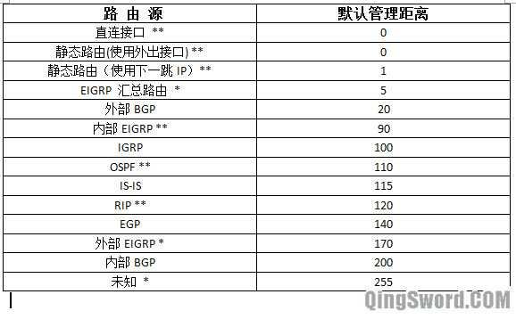
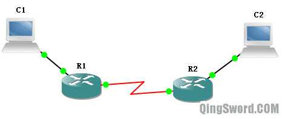

[CCNA图文笔记]-10-路由选路原则
引言
这篇文章介绍当一个目标地址被多个目标网络覆盖、一个目标网络的多种路由协议的多条路径共存时，或当一个目标网络同一种路由协议的多条路径共存时，路由器的转发规则。
文章目录
0×1.管理距离 AD（Administrative Distance）
管理距离是用来提供路由可信度的一个参考值，管理距离越小，路由条目越可靠。这意味着，有较小管理距离的路由条目将优先于较大的条目，管理距离的取值范围从0-255，0是最可信，255是最不可信，如果一台路由收到同一个网络的两条路由更新，路由器将选择管理距离较小的那条，放入路由表。
各路由协议默认管理距离如下图：
0×2.路由选路原则
a.子网掩码最长匹配
如果一个目标地址被多个网络目标覆盖，它将优先选择最长的子网掩码的路由。比如到达10.0.0.1网络有两条路由条目:10.0.0.0/24下一跳是12.1.1.2,10.0.0.0/16的下一跳是13.1.1.3，因为第一条的子网掩码/24大于第二条的/16，所以路由将到达10.0.0.1网络的数据发往12.1.1.2；而如果路由上有发往10.0.1.1的数据，则选择10.0.0.0/16，因为10.0.1.1不包含在10.0.0.0/24网络中。
b.管理距离最小优先
在子网掩码长度相同的情况下，路由器优先选择管理距离最小的路由条目。比如到达10.1.1.0/24路由有两条，一条是通过RIP学习来的，管理距离是120，一条是通过OSPF学习到的，管理距离是110，那么路由器优先选择OSPF学习到的路由条目放进自己的路由表中。
RIP和OSPF学习到的10.1.1.0/24的条目不会同时出现在路由表中，路由器只会保存最优路径，如果OSPF学习到的那个条目消失，RIP学习到的路由条目才会出现在路由表中。请注意，这里必须强调的是，相同的路由条目（RIP和OSPF同时报告了一个相同的子网，路由优先选择OSPF，因为在子网掩码长度相同的前提下，OSPF有更小的管理距离）。
c.度量值最小优先
如果路由的子网掩码长度相等，管理距离也相等，接下来比较度量值，度量值最小的将进入路由表。比如路由器通过RIP学习到了10.0.0.0/24的两个条目，一个条目的跳数(hop)是2，另一个的跳数是3，那么，路由器选择跳数是2的那个条目放入路由表。
0×3.静态路由排错
下图中，R1可以Ping通C2，C1却Ping不通C2，所有设备IP配置正确，且接口都正常开启，请问是什么原因导致了这种情况的发生？
原因分析：R1可以ping通C2，说明R1上面添加了去往C2网段的静态路由。而当C1 Ping C2时，数据到达R1，R1添加了C2所在网段的路由，所以他将数据发往R2，R2转发给C2，数据成功到达；之后，C2对C1的ping进行应答，应答数据被发往自己的网关R2，假如R2上面也存在C1所在网段的静态路由，那么R2会将应答数据发给R1，R1再交给C1，应答数据也成功到达，ping成功。现在的问题是ping不通，说明假设错误，R2上面没有去往C1所在网段的路由。